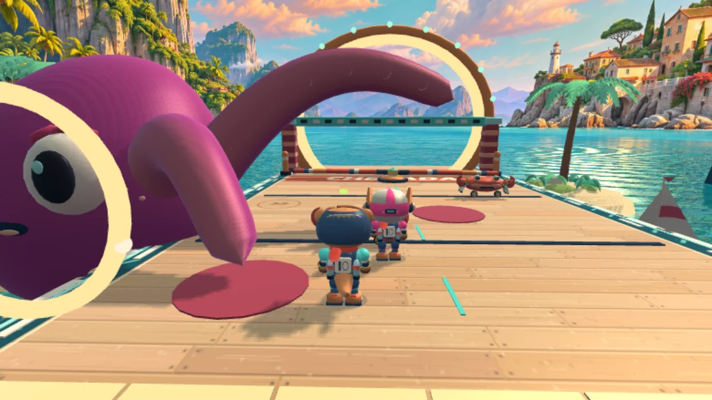
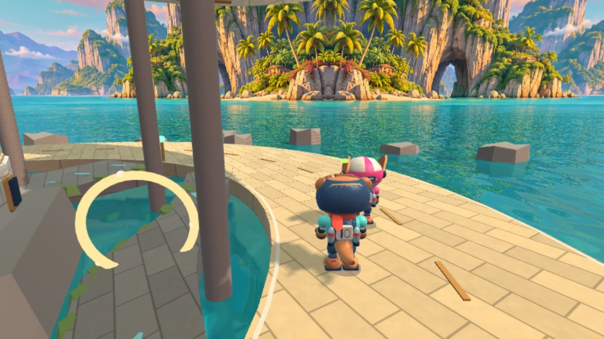
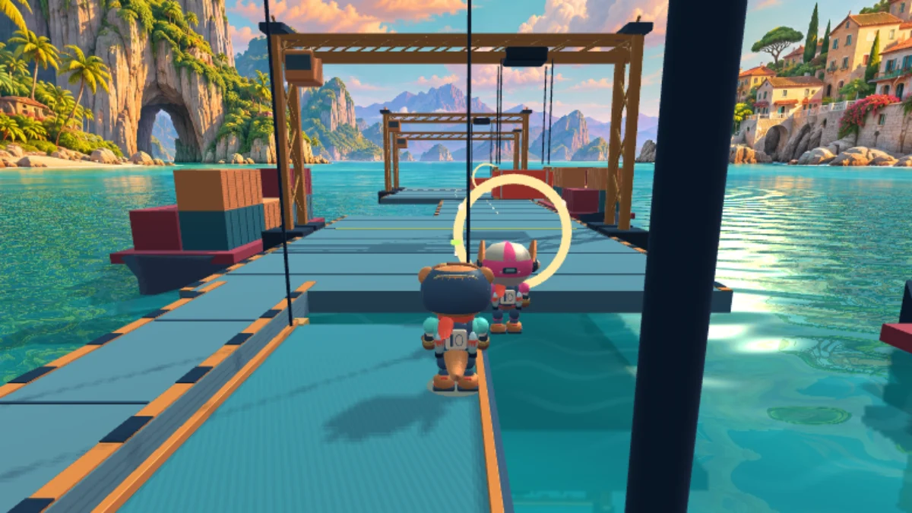

1ª prova
Baía do Kraken
Pegue os anéis de turbo, salte entre plataformas e escape dos tentáculos no píer tropical.

Copa das Marés
Corrida 3D em três pistas, com maré baixa, obstáculos e um pódio para decidir quem manda na água.
Copa das Marés

1ª prova
Pegue os anéis de turbo, salte entre plataformas e escape dos tentáculos no píer tropical.

2ª prova
Desvie das cargas em movimento. Contorne pelo cais estreito ou salte no contêiner suspenso.
Final
A maré baixa revela dois atalhos de pedra. Na maré alta, siga pela pista principal e suba em espiral até a lanterna.
2 a 6 pilotos
As provas somam 10, 8, 6, 4, 2 e 1 ponto por colocação. Em caso de empate na soma, vale a pontuação do Farol.
| Ação | PC | Celular |
|---|---|---|
| Mover | WASD ou setas | Arraste na metade esquerda |
| Pular | Espaço | Um toque na metade direita |
| Mergulhar | Shift | Dois toques na metade direita |
Pode jogar solo contra bots ou entrar em Treino livre para aprender os saltos.